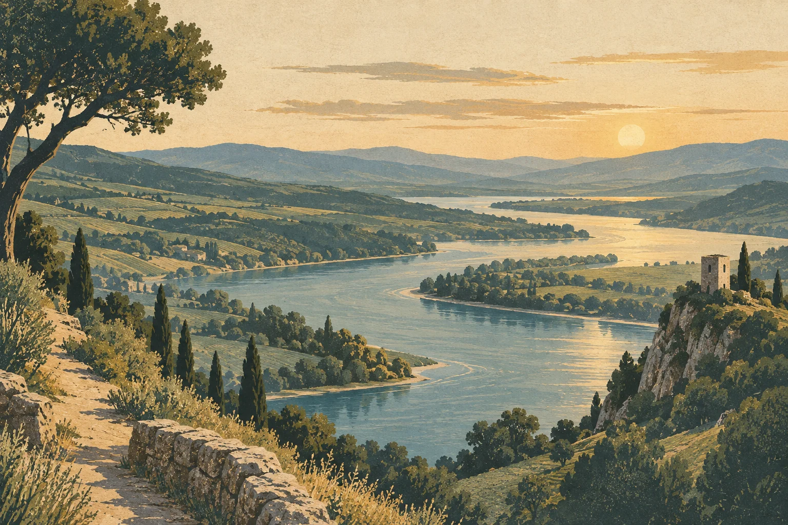

После прогулки
Выберите время и уточните наличие столика. Если хочется посидеть на веранде, обсудите её работу заранее.
ПРОДОЛЖЕНИЕ ВАШЕЙ ПРОГУЛКИ
Историческое место, речная панорама
и встреча за общим столом.

ВАШ МАЛЕНЬКИЙ МАРШРУТ
Выберите время и уточните наличие столика. Если хочется посидеть на веранде, обсудите её работу заранее.
Меню можно посмотреть в карточке ресторана. Наличие блюд и текущие цены подскажет администратор.
Посмотреть меню в 2ГИС ↗Планируете банкет? Расскажите о дате, числе гостей и формате вечера, чтобы обсудить меню и условия.
Обсудить событие ↗ДО ВСТРЕЧИ В ГОРОДИЩЕ
2Г по Яндекс Картам · 2ж по 2ГИС
В карточках отличается буква корпуса.
Откройте точку на карте или уточните подъезд по телефону.
Часы работы, меню и условия визита уточните у администратора.
Написать в WhatsApp ↗